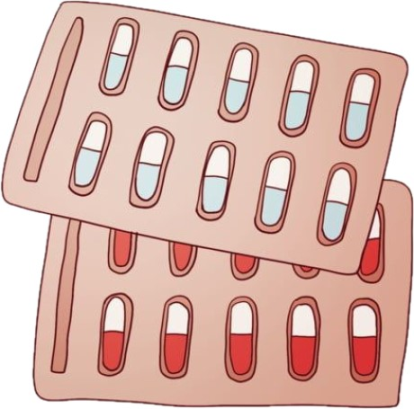
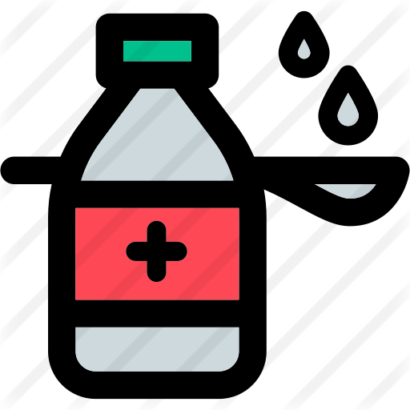
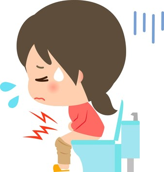
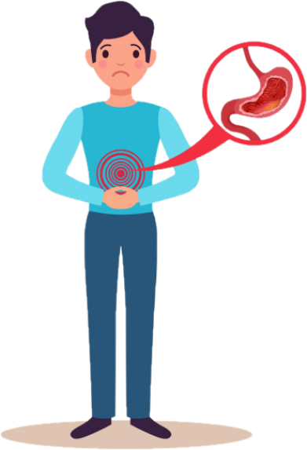

Compresión del fármaco al que se añaden excipientes, son sustancias adicionadas con fin de dar forma, cohesión, sabor
u olor. Pastillas
Compresión del fármaco al que se añaden excipientes, son sustancias adicionadas con fin de dar forma, cohesión, sabor
u olor. PastillasNuestros productos principales son los medicamentos. Los medicamentos son sustancias que sirven para curar o prevenir una enfermedad, también para reducir efectos del organismo o aliviar dolor. Estos vienen en diferentes presentaciones como:
| Capsula | Jarabe | Comprimida |
|---|---|---|
| Está formado por el fármaco más una cubierta, esta es una gelatina y tiene una función de protección frente a la luz y la humedad. | Formados por el fármaco más azúcares y agua. | Compresión del fármaco al que se añaden excipientes, son sustancias adicionadas con fin de dar forma, cohesión, sabor
u olor. Pastillas |
Algunos de los medicamentos que vendemos son:
| Analgésicos | Antidiarreico y laxantes | Antiinflamatorios |
|---|---|---|
| Tienen como finalidad aliviar el dolor físico. | Los antidiarreicos tienen como finalidad aliviar y detener los efectos de la diarrea. Los laxantes tienen como finalidad resolver problemas de estreñimiento. |  |